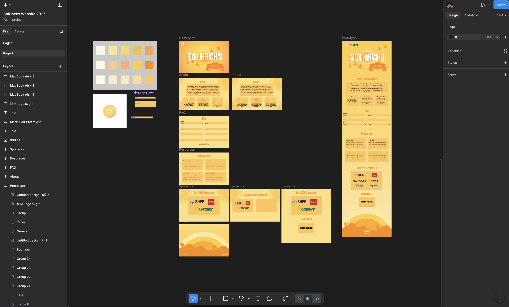
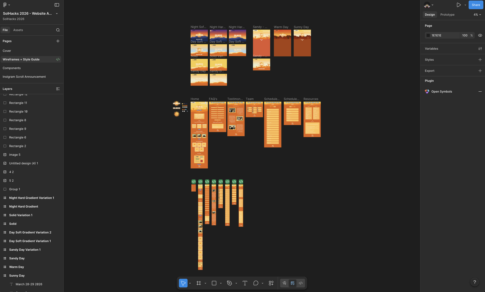
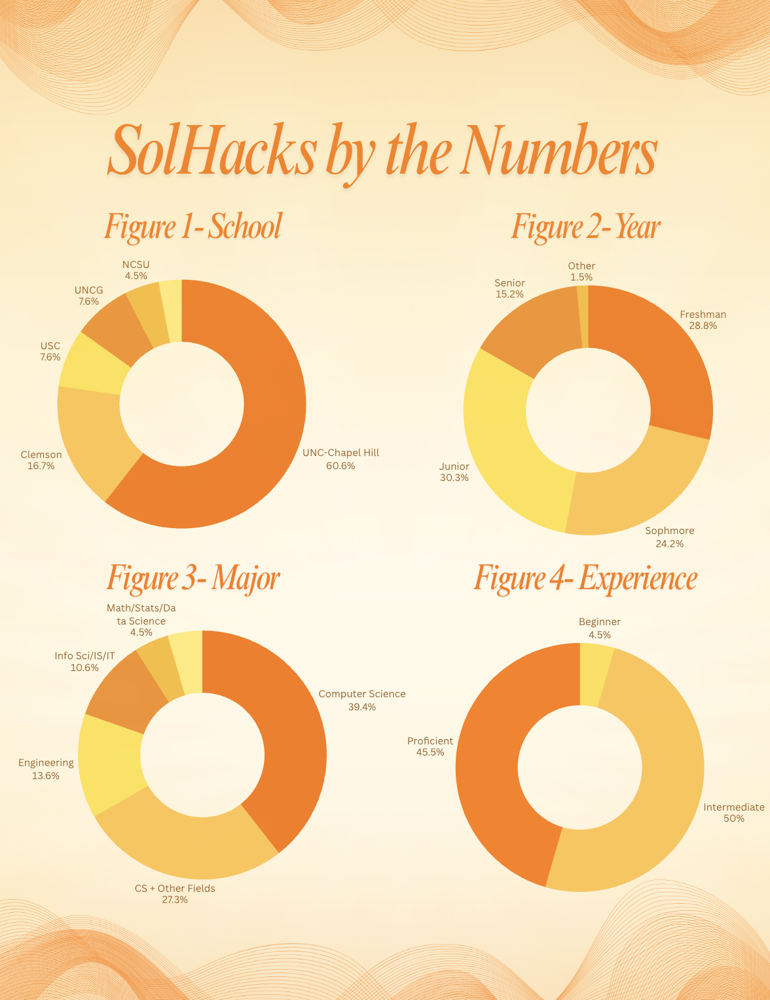
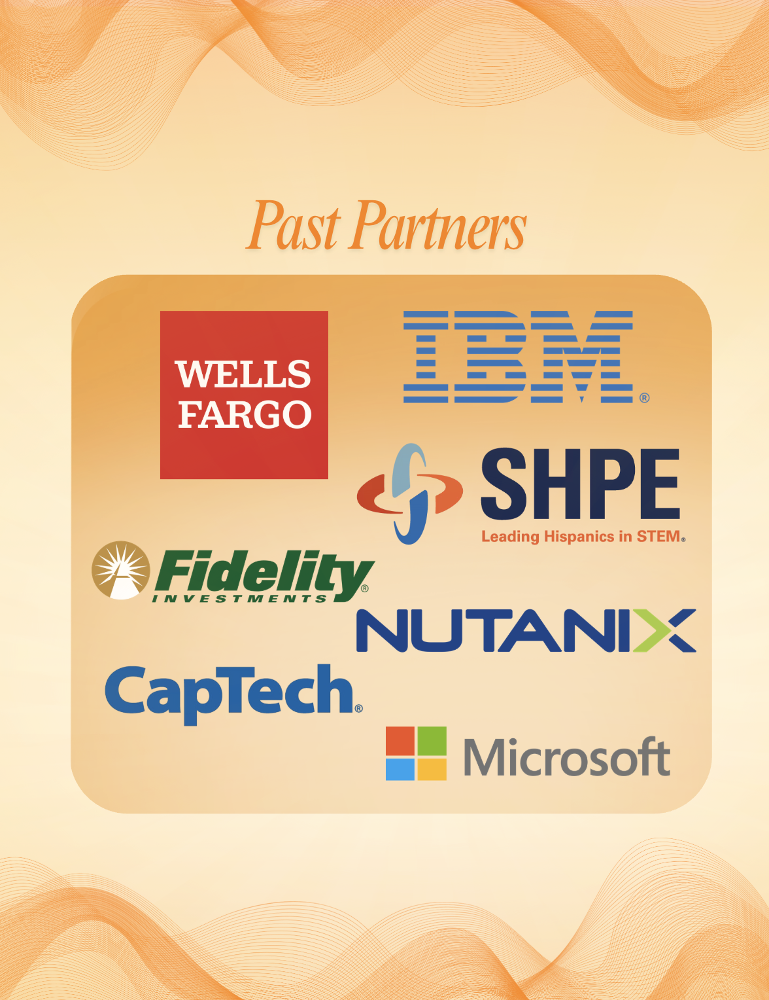
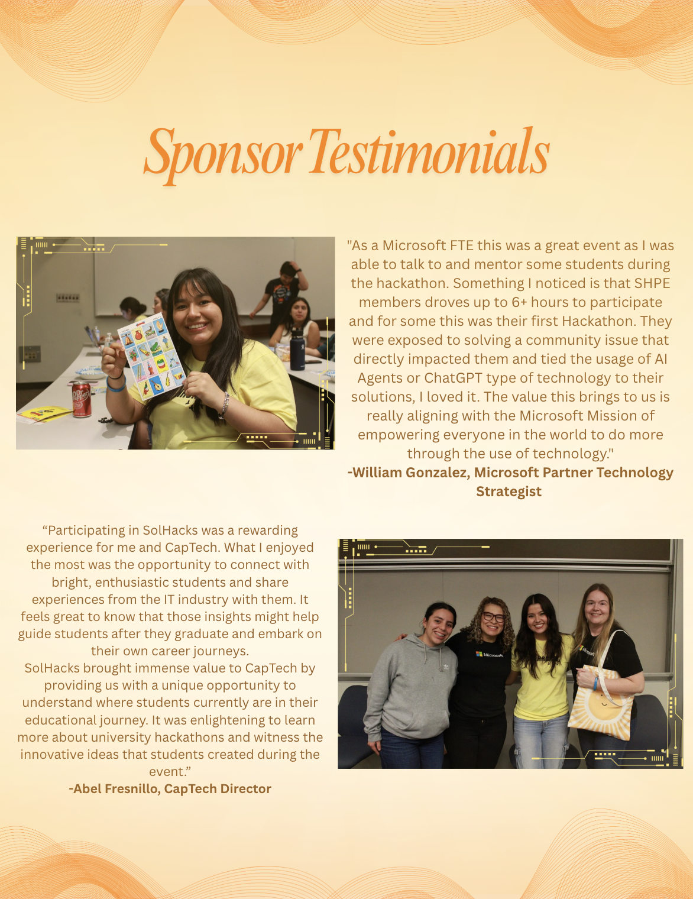

A hackathon built for a community that rarely saw itself in tech spaces
SolHacks is UNC Chapel Hill's first hackathon created specifically for and by Latinx students in tech. The event was organized under Latinos in Tech (LiT) with a mission to celebrate cultural identity while building real technical skills. From the beginning, the brand needed to do two things at once: feel welcoming to students who had never attended a hackathon, and feel credible to sponsors and tech partners.
I joined the team for SolHacks 2025 as Marketing Chair and returned in 2026 as Director of External Marketing — taking on full ownership of how SolHacks showed up to the outside world.
Learning the event. Owning the brand.
Starting with a name and a vision — nothing else
When I joined the 2025 marketing committee, SolHacks had a name and a cultural direction (sol/Latino theme — sun, warmth, community) but no established visual identity, no website, and no audience. My job was to help build the brand from scratch while coordinating with web development, design, and the broader Latinos in Tech organization.

Translating culture into a cohesive visual system
I worked within the Latinos in Tech Canva workspace and SolHacks Figma layout to develop a visual language rooted in the sol/Latino theme — incorporating warm sun tones, earthy textures, and design motifs inspired by the cultural identity of the community we were building for.
Rather than treating the brand as decorative, I approached it as communication — every design decision needed to signal to prospective participants that this event was made for them.
Brand Direction
Established the visual tone — warm, sun-forward palette, cultural motifs (sun, cactus, earthy textures) — coordinating with CLC and Mi Pueblo for design alignment.
Website Design Support
Worked alongside the web development lead (David Villavicencio) to design key pages in Figma — including registration, schedule, FAQ, sponsor list, and Meet the Team.
Social Media Strategy
Built a content and posting strategy for Instagram — defining post cadence, reel formats, audience growth tactics (cold DMs to clubs, CS department outreach), and co-collaborator setup with LiT.
Promotional Materials
Designed posters, tabling assets, and Comp Sci TV ads to build awareness across campus in the weeks leading up to the event.
Year 1 → Year 2
After SolHacks 2025, I was promoted to Director of External Marketing — recognizing my contribution to the event's brand presence and my ability to manage cross-functional creative work.
From one page to a full design system
The clearest way to see the progression is side by side. SolHacks 2025 was a well-crafted single-page prototype — warm, culturally grounded, and functional. SolHacks 2026 became a multi-page site with dedicated navigation, real attendee testimonials, structured schedule pages for two days, a team roster, and a tiered partner section.
That leap didn't happen by accident. It happened because I moved from executing tasks to making strategic decisions about content, structure, and what information participants actually needed before, during, and after the event.

2025 · 1 page · Flat prototype

2026 · 7+ pages · Components & variants
From executing to leading.
Building on momentum — with more scope and more responsibility
For 2026, I stepped into the Director of External Marketing role with a broader mandate: manage the full outward-facing presence of SolHacks, oversee the website redesign, coordinate with sponsors and partners, and ensure the brand evolved while staying true to its roots.
The 2025 site was a single-page prototype — functional, warm, and on-brand, but limited in scope. For 2026, the vision was a full multi-page experience: dedicated pages for FAQs, Testimonials, Team, Schedule, and Resources. That meant making real information architecture decisions, not just visual ones. Navigation was broken in places from 2025, outdated content was buried throughout, and the structure needed a complete rethink before we could build upward.
Leading with structure, then filling with story
I led the website strategy with a clear directive: focus on structure first, visuals second. I created a detailed brief for the development team outlining priority fixes — broken nav links, outdated 2025 references, email link errors, inconsistent map layouts — and longer-term improvements like condensing the homepage and splitting content into dedicated subpages.
Simultaneously, I directed the redesign of the sponsors/partners section, consolidating donors and volunteers from 2025 under a unified "Previous Partners" section to keep the page clean and credible for incoming sponsors.
On the design side, 2026 marked a meaningful shift in how I approached Figma itself. Unlike 2025's prototype — which was built as a single, flat layout — the 2026 site was built using components and variants. Reusable components for navigation, cards, schedule items, and sponsor blocks meant the design was no longer just a mockup. It was a scalable system that developers could build from consistently and that future marketing chairs could update without breaking the visual language.
"Focus on structure, not visuals — get the information architecture right before adding another layer of polish."
Information Architecture Audit
Reviewed the full 2025 site and documented every structural issue — broken links, outdated content, inconsistent navigation, and bloated homepage sections — then prioritized fixes by impact.
Director-Level Coordination
Managed handoffs between design and development — writing detailed briefs for both the dev lead (David) and design lead (Rodrigo) with clear, actionable tasks and upcoming content milestones.
External Brand Presence
Oversaw SolHacks' outward-facing identity across website, Instagram, and promotional materials, ensuring consistency across every touchpoint as 2026 details rolled in.
Sponsor & Partner Strategy
Restructured the sponsor section to reflect new tiered sponsorship, consolidate previous partners, and build credibility with incoming sponsors reviewing the site.
What SolHacks built — and what it built in me
SolHacks 2025 successfully ran as UNC's first Latinx-centered hackathon, drawing 66 attendees and 16 submitted projects — real numbers that validated the brand work, the outreach strategy, and the community we built around the event. The visual identity established in 2025 carried forward and evolved into a full component-based design system for 2026. SolHacks 2026 is currently in progress and set to run at the end of March 2026 — meaning this case study is still being written.
A cross-school, cross-major community — not just UNC
The 2025 data showed SolHacks reached well beyond Chapel Hill. While UNC–Chapel Hill made up the majority of attendees at 60.6%, participants came from Clemson (16.7%), USC (7.6%), UNCG (7.6%), and NCSU (4.5%) — demonstrating that the brand and outreach strategy resonated across institutions, not just our own campus.
Majors were equally diverse: 39.4% Computer Science, 27.3% CS + Other Fields, 13.6% Engineering, 10.6% Info Sci/IS/IT, and 4.5% Math/Stats/Data Science. Over 95% of attendees identified as intermediate or proficient — meaning the event drew serious participants, not just curious browsers. And with 28.8% freshmen and 24.2% sophomores, we built a pipeline of returning attendees for 2026.

Design professional enough to earn Fortune 500 partners
One of the most important constraints on this project is one that doesn't show up in a Figma file: the brand had to be polished enough that major corporations would trust it with their name and logo. Wells Fargo, IBM, Microsoft, Fidelity, CapTech, Nutanix, and SHPE all came on as partners — and every one of them evaluated SolHacks partly through its visual identity and web presence.
That's a different standard than a student project. It meant every design decision — color, type, layout, how sponsor logos were displayed — had to hold up next to some of the most recognized brand identities in the world. The fact that these partners returned and gave glowing testimonials is proof the design met that bar.

In their own words
The strongest validation of a brand isn't internal — it's what sponsors and attendees say after the event. Both testimonials below came unprompted from sponsor representatives who attended in person.
"SHPE members drove up to 6+ hours to participate and for some this was their first hackathon. They were exposed to solving a community issue that directly impacted them... The value this brings to us is really aligning with the Microsoft Mission of empowering everyone in the world to do more through the use of technology."
— William Gonzalez, Microsoft Partner Technology Strategist
"SolHacks brought immense value to CapTech by providing us with a unique opportunity to understand where students currently are in their educational journey. It was enlightening to learn more about university hackathons and witness the innovative ideas that students created during the event."
— Abel Fresnillo, CapTech Director

Beyond the deliverables, this project sharpened my ability to work in ambiguous, fast-moving environments where the brief is incomplete and the team is distributed. I learned to make design decisions quickly, communicate them clearly to developers, and defend them to stakeholders — and to hold a brand to the standard that Fortune 500 partners expect.